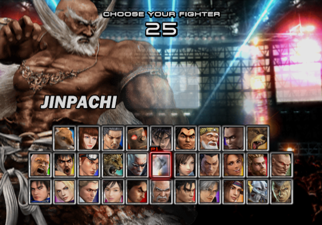
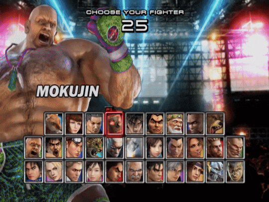
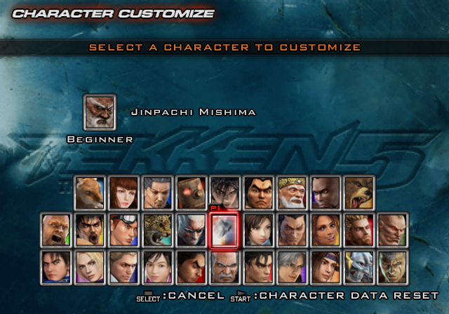
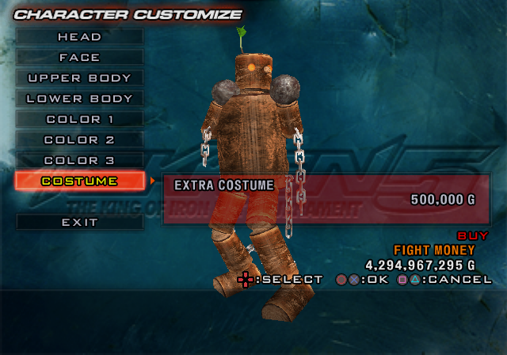
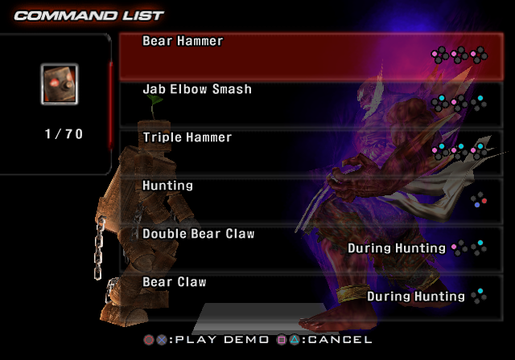
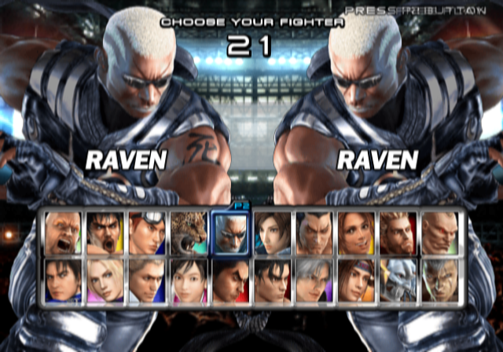

The codes are available in .pnach files for use with PCSX2 Emulator.
Cheat codes need to be renamed into (GAME_CRC).pnach. PCSX2 can read multiple .pnach files of the same CRC and with line added so you can have multiple .pnach's in the same game. To do it, simply add a line at the end (ex. CRC-something.pnach).
Guide for using PNACHIf you need the cheat codes in RAW format, simply do these steps:
1. Use "Find and Replace" to replace the lines "patch=1,EE," with "" (aka. NOTHING).
2. Repeat for the lines "//".
3. Replace the lines ",extended," with " " (aka. SPACEBAR).
If you want to convert the codes into format of your Cheat Device (Action Replay, Codebreaker, Gameshark, etc.), you will need the Omniconvert app.
If you wish to download the PNACH but it constantly opens as the text file, use the "Right Click > Save Link As ..." trick.
Modding tools that are used to make cheat codes or modding game files.
Usage will also be explained but it should be pretty simple. The actual instructions on how to use the programs can be found inside the files (manuals) or look online for tutorials.
If you wish to download the file but it constantly opens it as the text file, use the "Right Click > Save Link As ..." trick.
- Final Release (PAL-E) = 1F88BECD.pnach
- Final Release (NTSC-U) = 652050D2.pnach
- Demo (NTSC-U) = 38830048.pnach
Player 1 Holds L1 + L2 to replace Tetsujin with Mokujin temporary. Then Mokujin needs to be selected with SQUARE.
Once all buttons are released, the Mokujin returns back.
Jinpachi has 4 costumes but to be able to select them, they must be bought first.
In order to do it, Customization codes and Extra costumes code need to be activated.
Random Select is on selection ID 31.
Since Random Select is moved, the game tries to load a character which doesn't exist so it loads Paul Phoenix as a fail-safe solution.
But this code replaces the wrong ID with Jinpachi's ID so the game sees Jinpachi instead.
When in Time Attack, if Human Costume for Jinpachi is selected, the game defaults to character Paul Phoenix or Xiaoling.
This code fixes it but once the cutscene is over, the player also gets transformed Jinpachi. That is because the games code changes the Costume ID for both sides if Human Costume is at use.
Makes the slot below Heihachi be for the Random Select so that it's not completely removed.
Makes Jinpachi not be skipped by a Random Select.
Needed for Jinpachi so that the Random Select can detect him.
Unlocks Jinpachi for Customization menu.
Since Jinpachi is on place of Random Select, this enables Random Select (ID 30) so that the Jinpachi can be selected.
Bypasses the check so that Jinpachi is selected instead of Paul Phoenix (default char ID).
Enables Mokujin in Customization menu.
Enables seeing command list for Mokujin.
Enables Jinpachi moveset for Mokujin.
Enables buying Extra Costume for EVERY character in the Customization menu.
Makes maximum possible Handicap be 200% instead of 150%.
Enables Hidden stages. There are only two of them.
One is the cutscene stage for Jinpachi (Final Stage 2).
Second one is used for Customization menu... I think.
Gives -1 Gold.
Unlocks all characters except Devil Jin.
Unlocks all movies in Gallery.
Replaces the Random Select icon with Jinpachi icon
Changes the number of rounds.
Enables the second player to join.
Bypasses the Demo checks that quit out if character or stage is changed from the default ones.
The Demo gamemode gives random characters and stages with each fight.
This gamemode seems to have been used for debugging purposes?
Launch Training Mode: Runs training gamemode.
Crash fixes: Fixes crashes.
Use GM 9 for changing characters: Uses GM 9 function for choosing characters so that it would be easier to pick characters.
Allows to change character for Gamemode Number 9.
Only characters which are on the Character Selection screen + Mokujin are available. Others produce in invisible character or crashes.
Drops to Character Select menu after the fight but doesn't work except for selecting stages. Used for Aracde and Special Gamemode No. 9.
Chooses which character table to use.
Unlocks all stages except for one which doesn't seem to show up in the stage selection screen.
If a non-existing stage is picked, the game crashes.
Prevents changing the stage for Gamemode Number 9 so that the picked stage from Character Selection screen can be played.
Forces the stage on any gamemode.
Available Stages: Dragon's Nest, Burning Temple, Waterfall, City at Sunset, The Final Frontier.
Enables pause menu BUT cannot be unpaused after it.
Fixes the mokujin from breaking the game but also breaks the Character Selection screen.
Changes the selected gamemode.
Tables for use with Cheat Engine.
Simply open the file inside the Cheat Engine. You can get Cheat Engine from HERE.
Premade files ( and updated ) with labels for use with PS2DIS.
Simply open the file inside PS2DIS and invoke analyzer or import it for the labels using "Import Labels from other file" option.
You can get the PS2DIS from HERE.